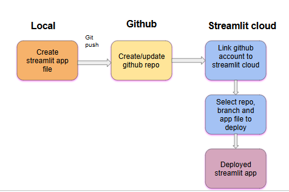

The application for predicting seagrass is developed using Streamlit and is deployed on Streamlit Community Cloud. Here are some of the advantages of Streamlit:
Ease of Use: Streamlit boasts a simple API, allowing you to create user-friendly and interactive applications with minimal coding. This makes it perfect for building small data apps or prototyping complex ones.
Python Focus: Streamlit leverages Python, eliminating the need to learn front-end languages like HTML or JavaScript.
Rapid Prototyping: With Streamlit, you can get a data application up and running quickly, thanks to its streamlined approach. This is ideal for agile environments where rapid iteration is key.
Predefined Widgets: Streamlit offers a variety of built-in widgets for data input and visualization, saving you time and effort.
Data Caching: Streamlit simplifies and speeds up computation by allowing you to cache data, reducing redundant calculations.
Streamlit Community Cloud
Streamlit Community Cloud is a free service offered by Streamlit for deploying Streamlit applications. It allows you to:
Deploy in One Click: The deployment process is very straightforward, often requiring just a single click within the Streamlit platform itself.
Keep Your Code in Your Repo: There's no need to make significant changes to your development process. You can keep your code within your existing Git repository (like GitHub).
Live Updates: Any updates you push to your code repository will be reflected in the deployed application almost instantly. This makes iteration and refinement a breeze.
Secure Data Connections: Streamlit Community Cloud allows you to securely connect your application to various data sources.
Restrict Access: You can control who can access your application by implementing viewer allow-lists on an application-by-application basis.
Manage All Your Apps in One Place: Streamlit Community Cloud provides a centralized dashboard to view, manage, and collaborate on all your deployed Streamlit applications.

Figure 1: Flowchart showing the process of deploying a Streamlit application to Streamlit Cloud
Computational Requirements
Streamlit Community Cloud has certain limitations on computational resources:
RAM: Streamlit Community Cloud apps typically have a memory limit of around 1 GB.
CPU: Streamlit Community Cloud apps run on shared CPU resources, so intensive computations might be limited.
The model is saved in H5 format and is 22.5 MB in size, making it easy to deploy the application on Streamlit Community Cloud.
Streamlit Application
This Streamlit application empowers users to explore predictions and gain valuable insights into seagrass health, a crucial indicator of marine ecosystem wellbeing. Currently, the application can predict images from the Greece and Croatia regions, as the model has been trained on these areas.
The application provides an interface to upload images through a file uploader. It currently accepts images of size (256, 256, 12) from the Sentinel-2 Level 2A satellite. After uploading the image, a “predict” button appears. Upon clicking this button, the model is invoked, and the predicted mask for the image is displayed alongside the original image. The predicted mask has three classes: 1) seagrass, 2) land, and 3) water.
The application also displays the proportions of the three classes in the generated mask and the mean confidence score, which indicates the model’s confidence in its predictions for the entire image. Higher confidence scores generally indicate more reliable predictions. If the confidence score is low, users might need to review the image manually.
Preprocessing Steps
When the user uploads an image of size (256, 256, 12), it undergoes several preprocessing steps before being fed to the model for prediction:
SWM Mask Calculation: The SWM (Sentinel Water Mask) is calculated for the image using a threshold of 0.9, chosen after experimentation. This threshold distinguishes between land and non-land areas, producing a binary mask that is subsequently smoothed using median blurring to reduce noise and improve quality.
SWM Calculation Formula: SWM = (B2 + B3) / (B8 + B11), where B2 is the Blue band, B3 is the Green band, B8 is the NIR band, and B11 is the SWIR band.
Sunglint Removal: Removes sunglint from the image bands using a linear regression approach with the NIR band as a reference. Median blurring is applied to smooth the deglinted bands, which are then merged with the NIR and other bands.
Depth Invariant Indices Calculation for Water Column Correction: Computes the Depth Invariant Index (DII) using logarithmic transformations of input bands, applies a water mask, estimates attenuation coefficients, and calculates DII values based on these coefficients or averages input bands for non-water pixels.
In summary, steps 2 and 3 remove sunglint from the image using the SWM mask and apply water column correction. Finally, the image is normalized by scaling its values between 0 and 1.